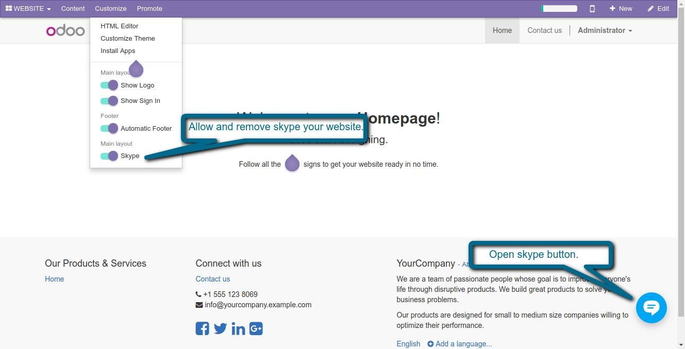
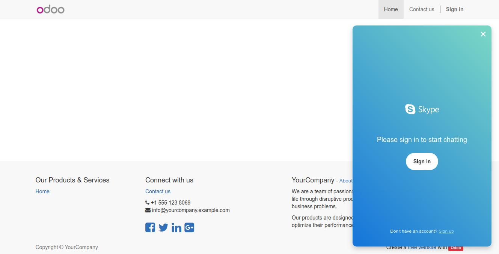

<section class="container">
    <div class="row">
        <div class="col-sm-12">
            <h2 class="oe_slogan">Website Add Skype</h2>
            <h3 class="oe_slogan">Allows you to add skype in your Odoo website</h3>
        </div>
    </div>
    <div class='oe_span12'>
    Features:-
    <ul>
        <li>We can easily add skype in our website.</li>
        <li>We can easily do chatting, voice and video calls.</li>
        <li>Nice look and feel.</li>
    </ul>
    </div>
    <div class='oe_span12'>
       1. Add your Skype name.
    </div>
    <div class='oe_span12'>
        
    </div>
    <div class='oe_span12'>
       2. Skype button to start chatting.
    </div>
    <div class='oe_span12'>
        
    </div>
    <div class='oe_span12'>
       3. Skype popup.
    </div>
    <div class='oe_span12'>
        
    </div>
    <div class='oe_span12'>
        <div class="oe_centeralign oe_mt32 oe_mb32">
            <a href="https://www.odoo.com/apps/modules/browse?search=webveer" class="oe_button oe_big oe_tacky">Our Other Apps</a>
        </div>
    </div>
    <div class='oe_span12'>
        <h1 align="center">
           If You Need Any Help Please Contact
        </h1>
        <h3 align="center">
            Email Id: dev.webveer@gmail.com
        </h3>
    </div>
    </div>
</section>